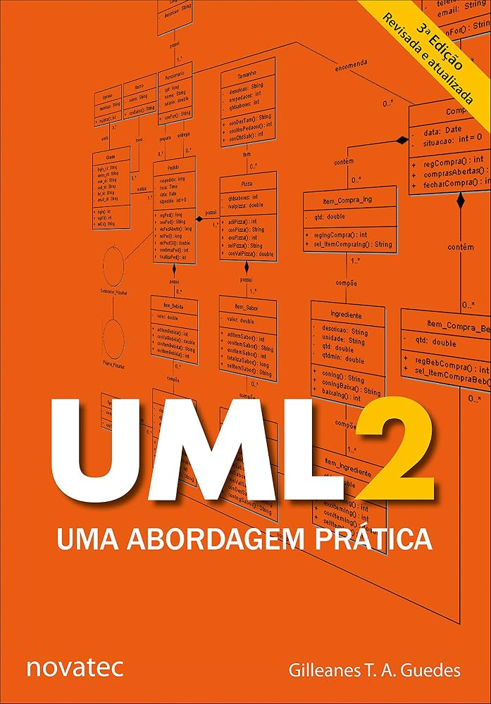

Pesquise livros, acompanhe materiais e organize seus estudos
A biblioteca ajuda os estudantes a encontrar livros, materiais de apoio e referências...
Além do atendimento presencial, o acervo pode ser consultado pela Biblioteca Pergamum...
A biblioteca ajuda os estudantes a encontrar livros, materiais de apoio e referências...
Além do atendimento presencial, o acervo pode ser consultado pela Biblioteca Pergamum...

Autor: José Augusto Manzano, Jayr Figueiredo de Oliveira
Comprar Livro
Autor: Gilleanes T. A. Guedes
Comprar Livro
Autor: Peter Rob, Carlos Coronel
Comprar LivroPesquise o título, autor ou assunto no Pergamum...
Leve seu CJ ou identificação estudantil...
Livros, periódicos e materiais de apoio...
Espaço para leitura, pesquisa e orientação...